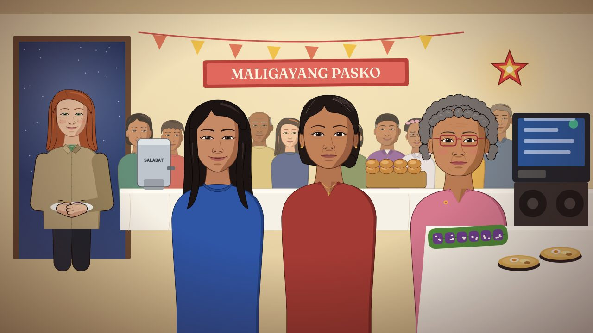

AP Human Geography · Topic 2.12 · about 45 minutes
Nine Mornings
Tala is seventeen. Her family left Batangas for Jersey City two years ago and runs a Filipino restaurant on Newark Avenue. Nine dawns before Christmas, one recipe card, and a best friend six thousand miles away.

Play Nine MorningsRunning slowly on your computer? Play the classic version. It has the same story and choices with simpler art.
Before you start
- Use a laptop or Chromebook, in a full-size window.
- Play in one sitting. The game does not save. If you refresh or close the tab, you start over.
- Keep your worksheet open next to the game and stop at each checkpoint.
- No sound needed.
How to play
- Click, or press Enter, to keep going. ← goes back one line.
- Pick choices by clicking them, or with 1 2 3.
- Tap an underlined word with a ? to see what it means.
- Small glowing dots are things you can look at. They are optional.
- There are no wrong choices. Every choice changes what happens.